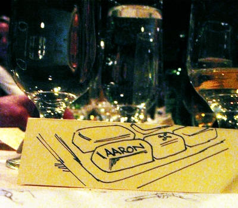
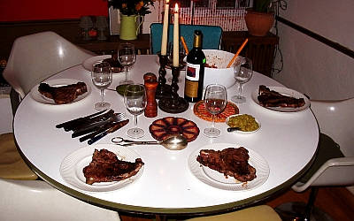
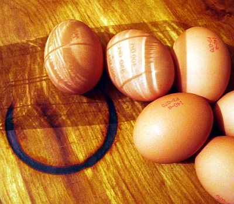
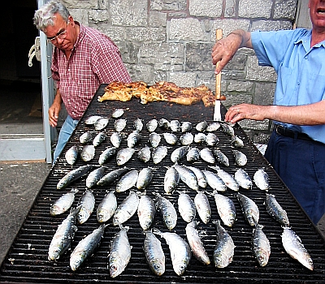
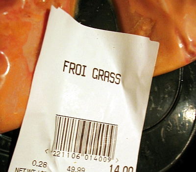

Design Issues and Technical Challenges Making the Eatdrinkfeelgood Markup Languge RDF-Friendly
Aaron Straup Cope
http://www.aaronstraupcope.com
http://www.eatdrinkfeelgood.info
Hi, my name is Aaron

When I am not writing code, I am usually in the kitchen
Eatdrinkfeelgood Markup Language

Maximum reusability
Allow for higher-order functions
The View source
rule
Why RDF?

Formalized grammar
Increased flexibility and extensibility
Ontologies and unambiguous referents
Why not RDF — Parsers
Use Java
is not an answer
Why not RDF — XML

Whither RDF/XML C14N?
Plays poorly with XSLT
Breaks XInclude
Why not RDF — URIs

URIs are not required to be resolvable
I am not a number!
Conclusion
Unlikely to be RDF
Modify the language to more easily map to RDF
XSLT 2.0 to the rescue?